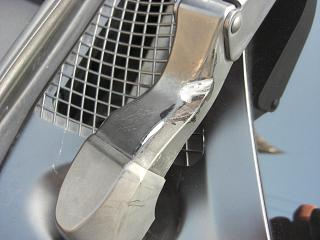
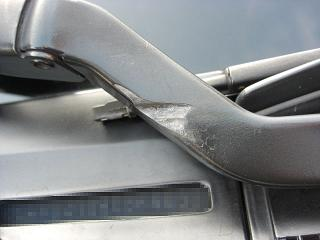
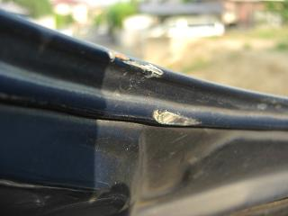
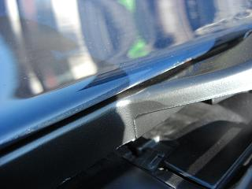

 右側アームの干渉は良く聞きますが、、 最近、左側までボンネットに干渉（と言うより当たる）するようになってきた。。 ここまで動くと、Aピラーにも当たる＾＾； ワイパーが動くたびに「ゴツッ」と鳴って気になりだすと止まらない。
|
 右側もまるでサンダーで削ったような状態に。 もう少しで貫通してしまうぐらいにまで削れていた。
|
 当たっていた所は、塗装がハゲていたので。。 タッチアップで塗っておいた。
|
 交換後の図 クリアランスが確保されている＾＾ 新旧見比べてみると、新しいほうは左右ともに厚さが薄くなって構造も少し違っていた。 しかし・・・左側は、まだ少し干渉する。。 メカニックさんの話によるとワイパーモーター、ロッドが、 調整でカバーできる範囲を超えるほど磨耗して軸がブレて干渉しているらしい。 20年前の電気製品だしそろそろ仕方ないかぁ（..） 対策品パーツナンバー 61611384873・・・WIPER ARM LEFT 61611389052・・・WIPER ARM RIGHT ※「運転席側は、ワイパープレッシャーコントロールの有無に注意」 交換作業をする時は、ガラスにアームが当たって割れないように 緩衝材を敷くことをオススメします。
|